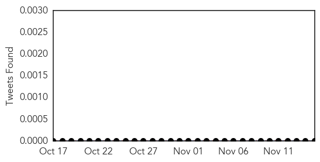
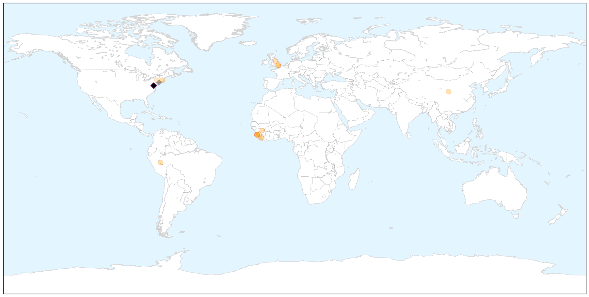
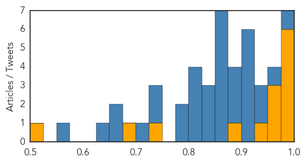

Bubonic Plague
30-Day Web Trend
30-Day Twitter Trend
0 alerts, 0 warnings

Article Locations


Article Confidences

Top Articles:
-
No articles found for Nov 15, 2015
Top Tweets:
-
No tweets found for Nov 15, 2015
Ebola
30-Day Web Trend
0 alerts, 0 warnings

30-Day Twitter Trend
27 alerts, 0 warnings

Article Locations

X

Article Confidences
Top Articles:
- 1.000
- Guinea Releases The Last 68 People Quarantined After Ebola Exposure
- 1.000
- Ebola Today: Ebola Czar Named; NIH Plans for Pham to 'Walk Out of This Hospital'
- 0.999
- Ebola epidemic Left 11,000 people Dead Where As Infecting More Than 28,000 People,Recent Report
- 0.998
- WHO declares end of Ebola outbreak in Sierra Leone
- 0.993
- SEAGA congratulates President Koroma for ending the Ebola outbreak
- 0.980
- WHO Official Urges More Int’l Support To Liberia
- 0.967
- Brazilian Tests Negative for Ebola Virus a Second Time
- 0.964
- Ebola ‘will return’ to Sierra Leone says Dr. Marshall Elliot
- 0.959
- Rediscovering Africa ep.7: Sino-African cooperation to fight Ebola
- 0.950
- U.K. announces return of Operation Gitrock personnel
- 0.892
- Military support to the fight against Ebola comes to a close
- 0.736
- Michael Bloomberg Archives
- 0.685
- Airtel adopts 50 Ebola orphans
- 0.501
- Brussels and Royal Air Maroc Honored for Serving Liberia During Ebola Outbreak
Top Tweets:
- 0.983
- Ebola outbreak 2015 update: Guinea hopeful for Ebola end as it releases 68 people from quarantine - https://t.co/BBCeZBJkAm ebola
- 0.959
- Guinea Releases Last 68 People From Ebola Quarantine - Medical Daily https://t.co/2BbOfIh6rQ ebola EVD
- 0.940
- KROMAH Amie Mother Celebrates End Of Ebola Virus Disease In Nigeria - https://t.co/WwkX8Xw68b ebola
- 0.936
- Cameroon: Ebola Virus Clinical Trials Underway - https://t.co/yGRLLAEnxY ebola
- 0.924
- Guinea Releases Last 68 People From Ebola Quarantine - https://t.co/WROoDn8TN9 ebola
- 0.923
- RT: Confirmed Ebola virus disease cases by month. 1 reported by so far for November. Just 1. https://t.co/TqDxyGwfM6
- 0.920
- Guinea Releases Last 68 People Quarantined After Ebola Exposure - https://t.co/7Z7Ii94nGZ ebola
- 0.920
- Guinea Releases Last 68 People Quarantined After Ebola Exposure - https://t.co/2Qg6UMdw6l ebola
- 0.915
- In Guinea: Last 68 people released from Ebola quarantine - https://t.co/cq26uaHHGY ebola
- 0.912
- Guinea Releases The Last 68 People Quarantined After Ebola Exposure - https://t.co/iaZd8dDPC9 ebola
- 0.892
- remaining people in ebola quarantine released - https://t.co/zJ4eurASdS ebola
- 0.889
- Over 68 people released from Ebola quarantine in Guinea - https://t.co/cjTL6bpaC7 ebola
- 0.885
- British Nurse Defeats Ebola - https://t.co/lBgvvy7om6 ebola
- 0.869
- The Ebola ring vaccination trial - https://t.co/xVtyzf5q1b ebola
- 0.868
- ebola - https://t.co/1BXjNzDwC6 ebola
- 0.868
- GOTS ebola - https://t.co/rAytpZEURi ebola
- 0.868
- Ebola - https://t.co/brZ2j4Jbz3 ebola
- 0.868
- Ebola - https://t.co/YpS48xsdnF ebola
- 0.865
- Guinea Releases the Last Batch of People in Ebola Quarantine - https://t.co/Qn1WDsb0Z7 ebola
- 0.857
- Brussels and Royal Air Maroc Honored for Serving Liberia During Ebola Outbreak - https://t.co/rdKKnUHz8V ebola
- 0.840
- Sierra Leonean Woman Forsters 51 Ebola Orphans. - https://t.co/LVuOUfwWWn ebola
- 0.837
- Rolf Harris 'Treated In Ebola Ward' - https://t.co/a3B6yPFnNX ebola
- 0.837
- Rolf Harris 'Treated In Ebola Ward' - https://t.co/UcqVuC2VRI ebola
- 0.821
- Over sixty eight individuals launched from Ebola quarantine in Guinea - https://t.co/3n4Ou2mOqe ebola
- 0.813
- Airtel adopts 50 Ebola orphans - https://t.co/BH7KyXRpDJ ebola
- 0.804
- Yall remember Ebola ? arabvines sudanesevines dubsmash - https://t.co/15mvfnqY84 ebola
- 0.803
- Profile of EboLa - https://t.co/LsICw6OZ55 ebola
- 0.796
- Xtreme hca garcinia cambogia drops garcinia afzelii kills ebola - https://t.co/mRrcM4KTCl ebola
- 0.793
- Divine Ebola Works ~ Divine Shield Aggro - https://t.co/3227zQtnmZ ebola
- 0.748
- Brussels and Royal Air Maroc Honored for Serving Liberia During Ebola Outbreak - The Bush Chicken https://t.co/gk3gfz2TWJ ebola EVD
- 0.744
- Initiatives Against Ebola in Program Countries - https://t.co/19JFLi0MgL ebola
- 0.716
- Guinea Releases Last 68 People From Ebola Quarantine - Medical Daily https://t.co/CAaJG43FhJ
- 0.671
- The grim reality of Ebola crisis in the United States and all over the world - https://t.co/Hc0eeUvN0L ebola
- 0.665
- Listening Post - Covering Ebola: Facts fear and failures - https://t.co/oL2ZCqt0hO ebola
- 0.626
- we need to be proud of our troops that have fought Ebola and those that are fighting Ebola
- 0.571
- When will the true Ebola Heroes be recognised? - https://t.co/L9iJICeZ1c ebola